Everything About Building a Web Service in One Day — From Planning to Implementation
Introduction
About Me
- Yusuke Wada / Yusuke Wada
- Born 1981 / Based in Yokohama / Single
- CEO, Wadit Inc.
- Director & CTO, Omoroki Inc.
- Web Application Developer
- Occasional writer
Wadit
Omoroki
Main Work #1
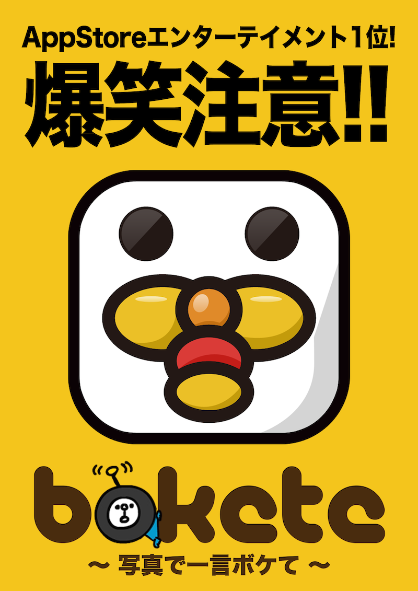
Main Work #2
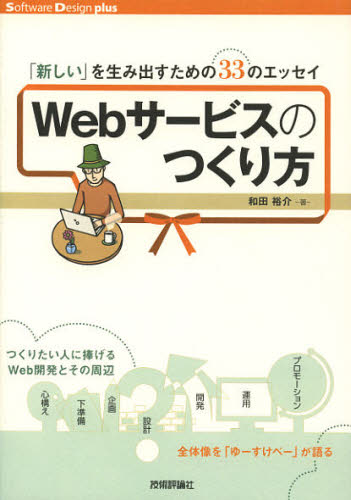
Other Things I've Built
- Kimi no Radio (Your Radio)
- anpi Report
- CDTube
- Various adult websites
Kimi no Radio (Your Radio)
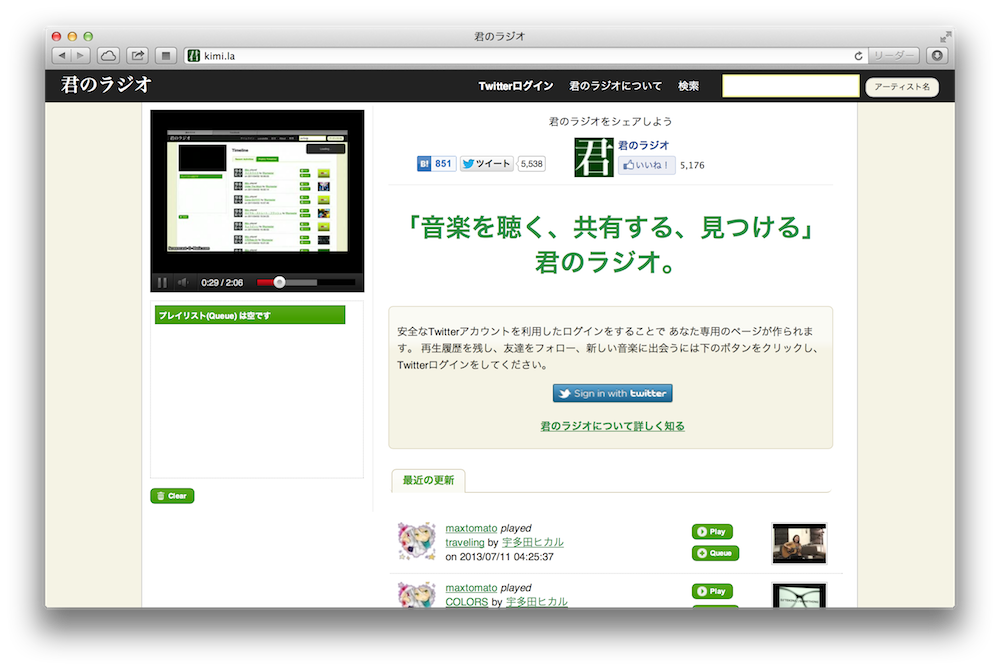
anpi Report
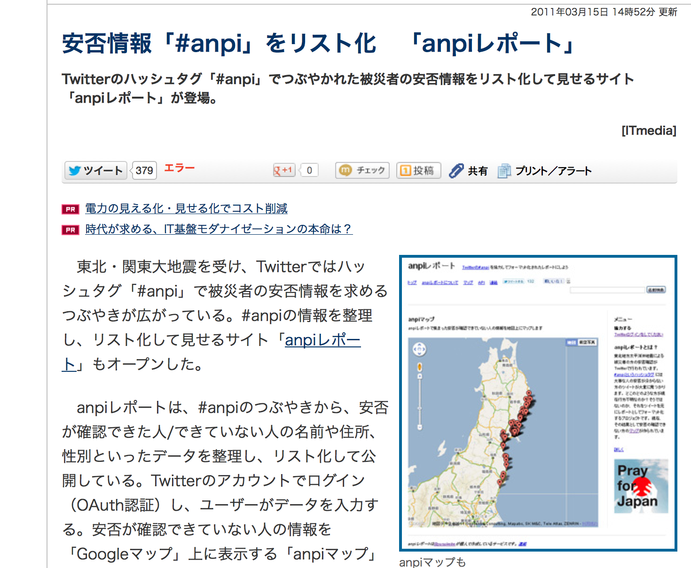
CDTube
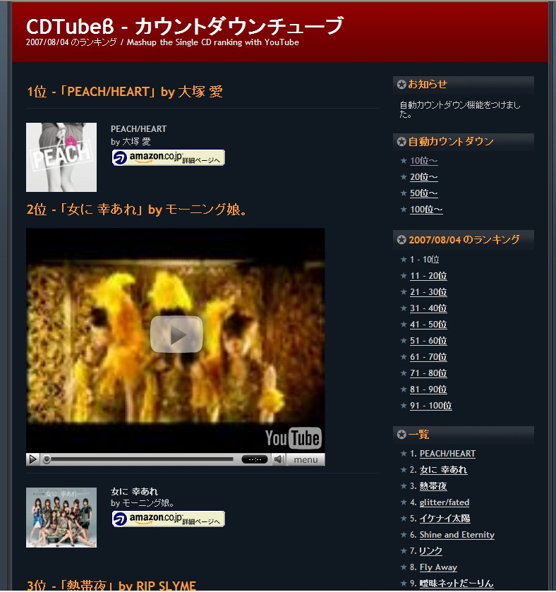
Bokete
Current Status
- Over 100 million monthly page views across all devices
- 1.7 million total downloads across smartphone apps
- Partnerships with hao123 and Yahoo! JAPAN
- Content published as books — twice
- Collaborations with various companies
Our Journey
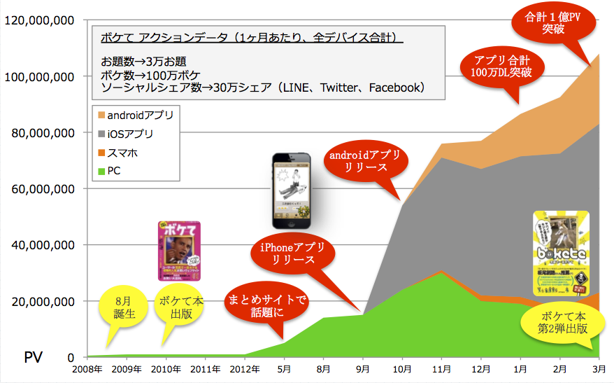
The Main Topic: "What It Takes to Build a Web Service"
Defining "Web Service"
A website that provides some kind of service to its visitors
- The term "web service" can also refer to sending and receiving messages via SOAP/XML over HTTP
- A dynamic website
- Pages that change depending on the context of each request
- Companion smartphone apps are part of this as well
Case Study: Cookpad
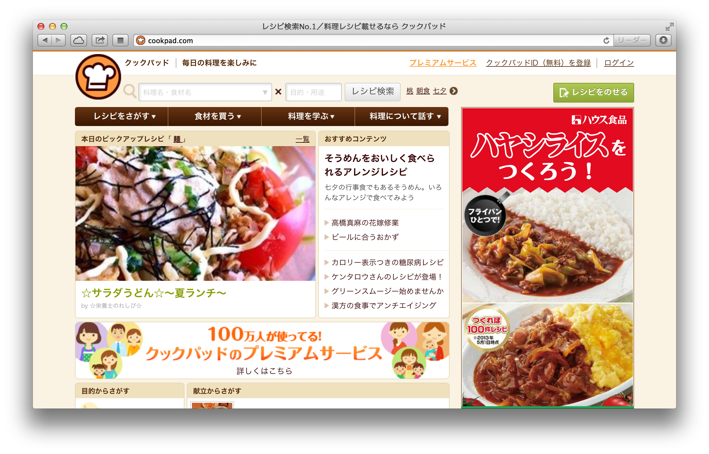
Case Study: nanapi
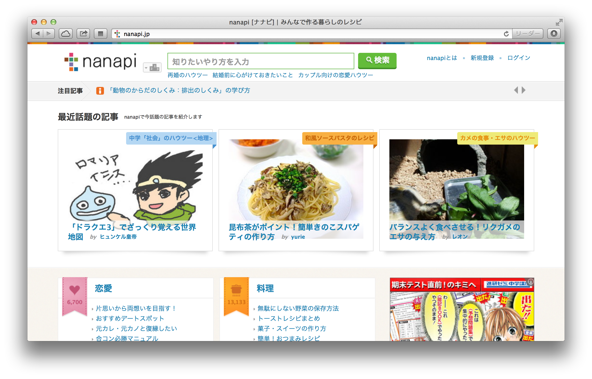
Providing a Service = Having Users
- The "C" in "B to C"
- Getting as many users as possible to use your service
- Enriching the user experience
- These two things are your key metrics
You Can Start Small — Even Solo
- Omoroki has just 4 employees
- We develop and operate in partnership with others
- Low initial costs
- Even an individual can build and publicize a web service
- Interests are so diverse today that even niche products can work
What You Get Out of It
- You learn a ton
- It becomes a second business card
- User reactions are a blast
- And maybe — just maybe — you make some money
The Best Moment
"You're the yusukebe who made that service, right?"
Change the World from a Six-Tatami Room
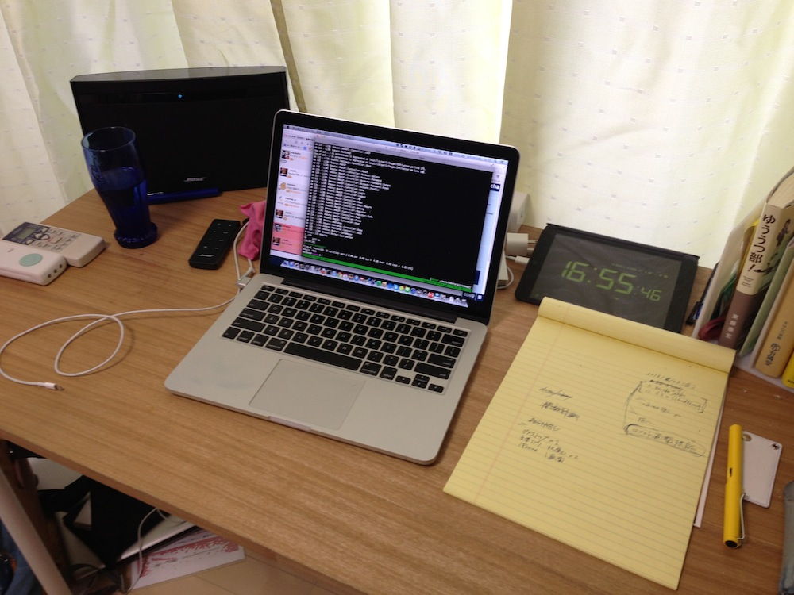
Words to Live By
Shut the fuck up and write some code.
For Example...
- Analyze tweets containing "good morning" from Twitter
- A seed of an idea
- You can validate it by running a simple program
twitter_search.pl
use Net::Twitter::Lite::WithAPIv1_1;
use Config::Pit;
use Encode;
use utf8;
binmode STDOUT, ':utf8';
my $config = pit_get('twitter-api');
my $nt = Net::Twitter::Lite::WithAPIv1_1->new(
consumer_key => $config->{consumer_key},
consumer_secret => $config->{consumer_secret},
access_token => $config->{token},
access_token_secret => $config->{token_secret}
);
my $result = $nt->search(
{
q => 'おはよう',
include_entities => 1,
result_type => 'recent',
count => 100
}
);
for my $tweet ( @{ $result->{statuses} } ) {
print "$tweet->{text}\n";
print "----------------------------------------\n";
}
The Important Thing Is to Get Your Hands Moving
Out of 1,000 people, 100 come up with an idea, 10 actually build it, and 1 succeeds
Planning & Development Prep
Build Your Own Process for Building Things
- Develop your own methodology for creating things
- Recommended reading:
The Design Thinking Toolbox
Keep the Creative Cycle Spinning
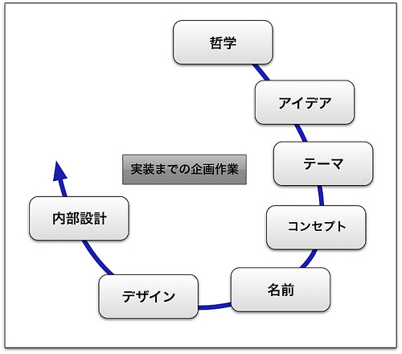
- Philosophy
- An unshakeable personal conviction about a particular interest
- Idea
- Specific, concrete ideas that serve your philosophy
- Theme
- The domain you're competing in
- Concept
- A framework that bundles your ideas into a single phrase describing what you're building
- Name
- You can't start without one. Go flashy, or go with something that speaks for itself?
- Design
- Not just aesthetics — the process of making deliberate compromises on the details
- Internal Architecture
- Designing the system internals in preparation for implementation
For Example...
Take Cookpad as an example...
The Difference Between Ideas and Concepts
- You'll come up with lots of ideas
- A concept is the framework that ties them all together
Example: Bokete is a web service for "captioning photos with jokes"
Ideas Are Combinations
An idea is nothing more nor less than a new combination of existing elements
— from "A Technique for Producing Ideas"
Ideas Come to You in the Shower
- Ideas don't come to you right away
- The key is how hard you push yourself right up to the point of incubation
- After that, they mysteriously come to you when you're relaxed
Seeds vs. Needs
- "Seeds" — what you're capable of building
- "Needs" — what people actually want
- You need to understand both
- But you shouldn't lean too heavily toward either one
The Ultimate Brainstorm
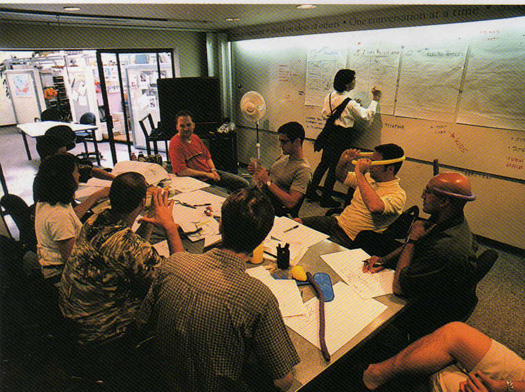
From 7 Ways to Unleashing your Creativity
Brainstorming Has Rules
- No shutting down ideas
- Build on each other's ideas instead
- Set a time limit
- Count the ideas
- Say wild things
- Have someone to synthesize
Risk, Risk, Risk
Risks are lurking everywhere
- Skill risk
- Technical risk
- Political risk
- Legal risk
Requirements Definition via Use Cases
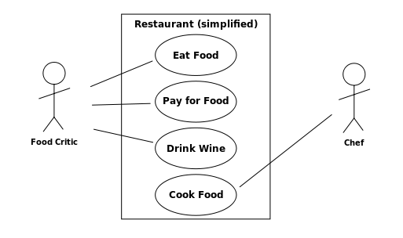
Let's Get Ready to Develop
Lower the barriers to development so your plan doesn't die on the drawing board
Nobody wants to be all talk and no action
The Editor — Your Tool of Choice
This is Emacs!
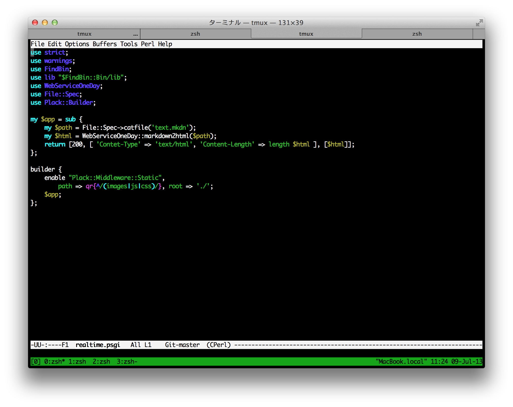
Study Groups
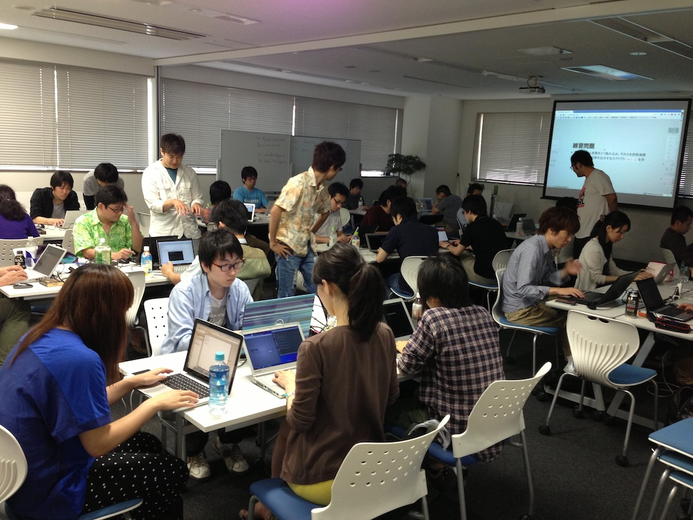
Standing on the Shoulders of Giants
Standing on the shoulders of giants
The CPAN library ecosystem
Web Technology Overview
Learn the Fundamentals of the Web While Building
Recommended book:
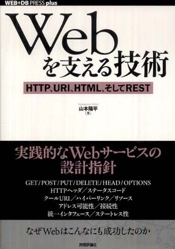
What Happens Behind the Scenes When You View a Webpage
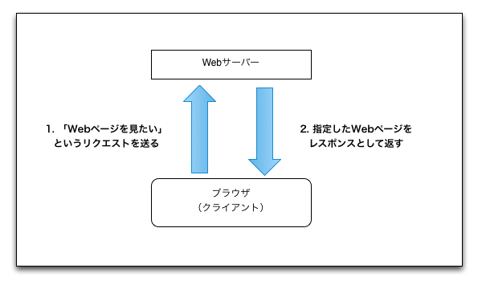
This exchange itself is defined as a protocol — a set of rules
HTTP, URI, HTML
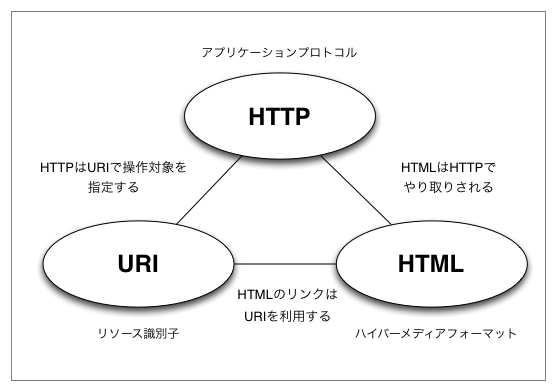
These are just conventions — think of them as "that's just how it works"
URI / URL
http://example.com/about.html
- Uses "HTTP" as the protocol
- The hostname is example.com
- The path is /about.html
- The extension is .html, so it's usually HTML
HTTP Methods
Requests from client to server. Four methods are primarily used for manipulating resources:
- GET
- POST
- PUT
- DELETE
GET via telnet
$ telnet yusukebe.com 80
GET / HTTP/1.1
Host: yusukebe.com
Elements That Make Up a Webpage
- HTML
- CSS
- JavaScript
- Images, Flash, and other binary files
HTML - HyperText Markup Language
Write semi-structured text using markup
<h2 class="title">Title</h2>
CSS - Cascading Style Sheets
Style HTML using CSS selectors
h2.title { color:#333; }
JavaScript
Manipulate the page on the browser side to add interactivity
$('h2.title').fadeOut();
Dynamic Sites vs. Static Sites
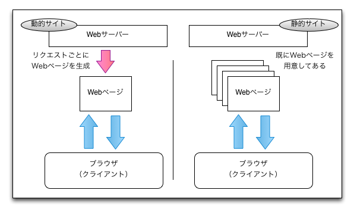
Web Programming Languages
- PHP
- Perl
- Ruby
- Python
- Java
These are the mainstream choices, though it's not impossible with C either
Web Application Framework
For example, Ruby on Rails
Before Frameworks
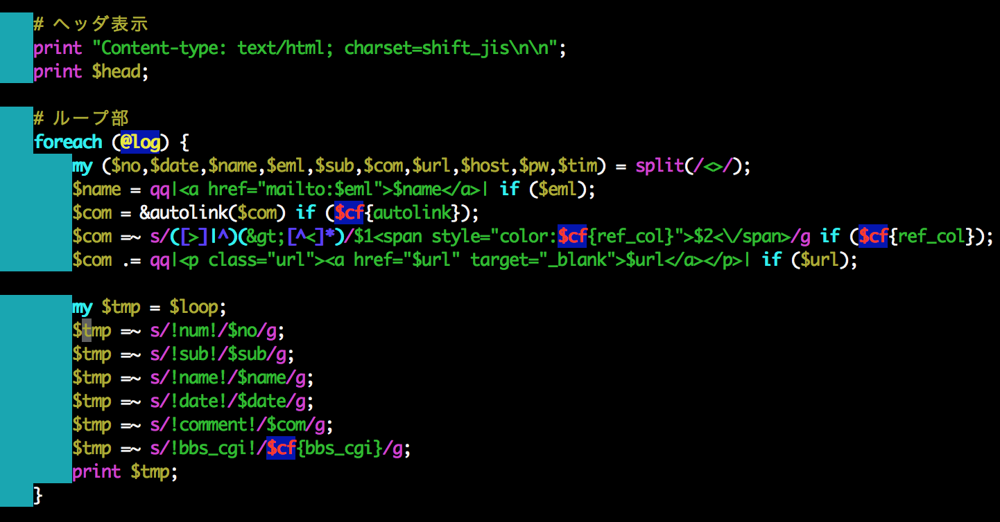
The MVC Pattern
- Model
- View
- Controller
It's a good idea to keep your concerns separated
Web Servers, Middleware, and More
- Apache
- nginx
- MySQL
- memcached
- Redis
- MongoDB
AWS as a Cloud Platform
- Amazon Web Services
- Bokete currently uses about 30 servers
- Can scale out in 10 minutes
- Access to managed middleware:
- S3 / CloudFront
- RDS
- ElastiCache
- SES
Live Coding Session #1
Let's Build Something!
Example: A bulletin board with Twitter login
When Should We Build It?
Right now!
Development in Practice
The Three Sacred Tools
- Terminal
- Editor
- Browser
Git as Version Control
- A version control system for your code
- clone/commit/push/pull/merge
GitHub
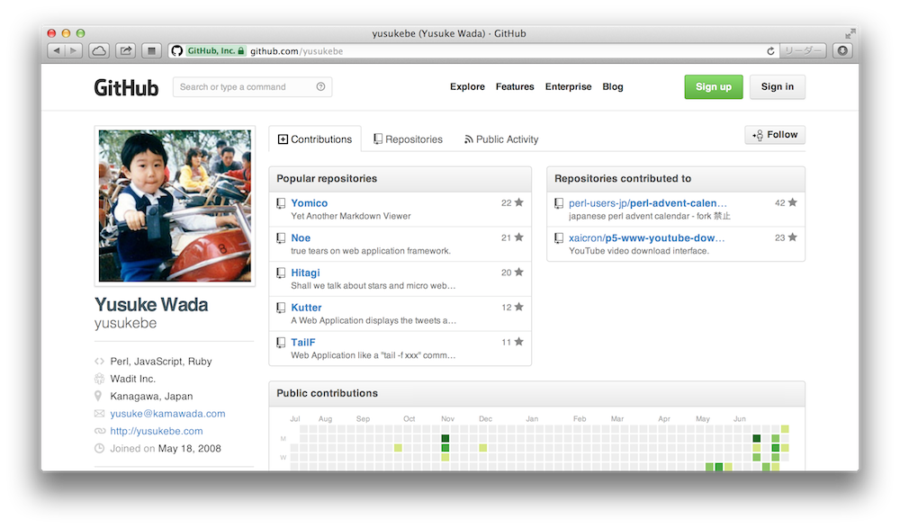
The Workflow
- Write code
- Write tests (sometimes tests first)
- Run it
- Check it in the browser
- commit/push
Deployment
- Your local OS X machine = development environment
- Test / Staging / Production
- Automate deployments with deployment tools
On the Programming Language Side...
use Perl
- 25 years old / Created by Larry Wall
- A language strong in text processing
- Often overshadowed by Ruby/Python/PHP, but...
- The web is basically text = Perl is great for the web too
- Latest stable Perl 5 version is 5.18.0
TMTOWTDI
There's More Than One Way To Do It
These Slides Were Actually Converted to HTML with Perl!!!
- Content written in Markdown
- A local web app for real-time preview
- A conversion script to generate HTML
- Published via GitHub Pages
- WebServiceOneDay.pm
- convert.pl
CPAN Libraries
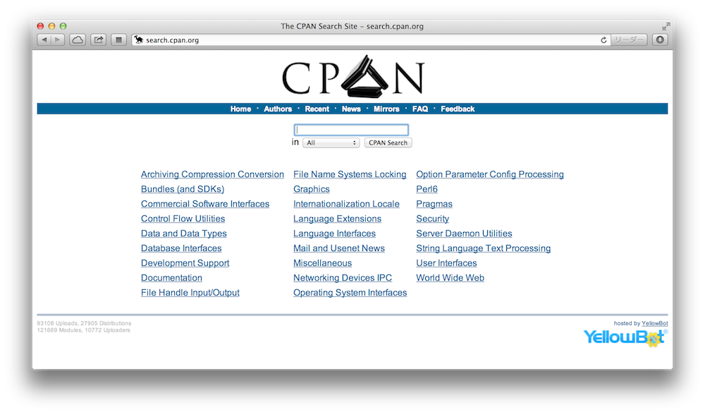
WebServiceOneDay.pm
package WebServiceOneDay;
use strict;
use warnings;
use Text::Markdown qw/markdown/;
use Path::Class qw/file/;
use Encode qw/decode_utf8/;
use Data::Section::Simple qw/get_data_section/;
use Text::MicroTemplate qw/render_mt/;
…;
Perl Mongers !!
Web Application Framework
Mojolicious
- Supports VC (View and Controller) out of MVC
- Depends only on Perl core modules = portable
- Not "full-stack" in the traditional sense
- Full-stack in the sense that it implements everything minimally on its own
- Combine with other CPAN modules as needed
- Latest version is 4.18
Skeleton
$ mojo generate app MyApp::Web
And you get...
$ tree ./
./
├── lib
│ └── MyApp
│ ├── Web
│ │ └── Example.pm
│ └── Web.pm
├── log
├── public
│ └── index.html
├── script
│ └── my_app_web
├── t
│ └── basic.t
└── templates
├── example
│ └── welcome.html.ep
└── layouts
└── default.html.ep
Routing
package MyApp::Web;
use Mojo::Base 'Mojolicious';
sub startup {
my $self = shift;
my $r = $self->routes;
$r->namespaces(['MyApp::Web::Controller']);
$r->get('/')->to('root#index');
}
1;
Controller
package MyApp::Web::Controller::Root;
use Mojo::Base 'Mojolicious::Controller';
sub index {
my $self = shift;
my $message = "Hello, I'm from Yokohama!";
$self->stash->{message} = $message;
$self->render();
}
1;
Template
% layout 'default';
% title 'Welcome';
<h2><%= $message %></h2>
So Then
What shall we build!
Live Coding Session #2
Working with Databases
- Using MySQL
- A type of relational database
- Basically a "table"
- Querying with SQL
- Extracting and joining data
Table Structure
mysql> select * from entry;
+----+---------------+-----------+---------+---------------------+
| id | title | body | user_id | created_on |
+----+---------------+-----------+---------+---------------------+
| 1 | This is title | Body Text | 1 | 2013-07-23 14:00:00 |
+----+---------------+-----------+---------+---------------------+
1 row in set (0.00 sec)
SQL Statements
CREATE TABLE entry (
id INT UNSIGNED AUTO_INCREMENT,
title VARCHAR(255),
body TEXT NOT NULL,
user_id BIGINT UNSIGNED NOT NULL,
created_on DATETIME NOT NULL,
PRIMARY KEY (`id`)
) DEFAULT CHARACTER SET 'utf8' engine=InnoDB;
INSERT INTO entry
(title, body, user_id, created_on)
VALUES
('This is title', 'Body Text', 1, '2013-07-23 14:00:00');
O/R Mapper
- Object-relational mapping
- Work with Row objects
- Handle relations too?
- Issue SQL in a more programmatic way
Pseudocode
$db->insert( 'entry',
{ title => 'This is title', body => 'Body text' } );
my $entry = $db->single( 'entry', { id => 1 } );
say $entry->title; # This is title
$entry->update({ title => 'Another title' });
say $entry->title; # Another title
$entry->delete();
Build Models and Call Them from Controllers
- Keep controllers as thin as possible
- Models should be independently runnable and testable
- Recommended: use the O/R Mapper within your models
In the Controller
sub index {
my $self = shift;
my $entries = $self->model('Entry')->get_recent_entries({}, {
order_by => 'id DESC', page => 1
});
$self->stash->{entries} = $entries;
$self->render('index');
}
CLI
- Command-line interface
- Run as cron jobs or daemons
- a.k.a. batch processing
- Job queues
- vs. Web apps
Validation
- Verifying form input values
- For example: does it look like a valid postal code?
- Show appropriate error messages to the user
Implementing the Frontend
- Use minimal libraries to make life easier
- jQuery
- CSS Framework
Testing
- Ensuring your program behaves as expected
- Test code automatically determines "green" or "red"
TAP
ok $model->get_entry({ id => 1 });
Provisioning Example
- VPS or AWS — pick one
- Frontend proxy — nginx
- Application server — Starman / Starlet
- Database server — MySQL
- Cache server — memcached
Things Not Covered Today
Security
- Mojolicious sessions
- Escaping and related concerns
- CSRF protection
- Secure server administration
Deployment in Practice
- Server configuration
- Deployment tools
- Monitoring
Summary
- The mindset for building web services
- Planning and design
- Web technologies
- We actually built something